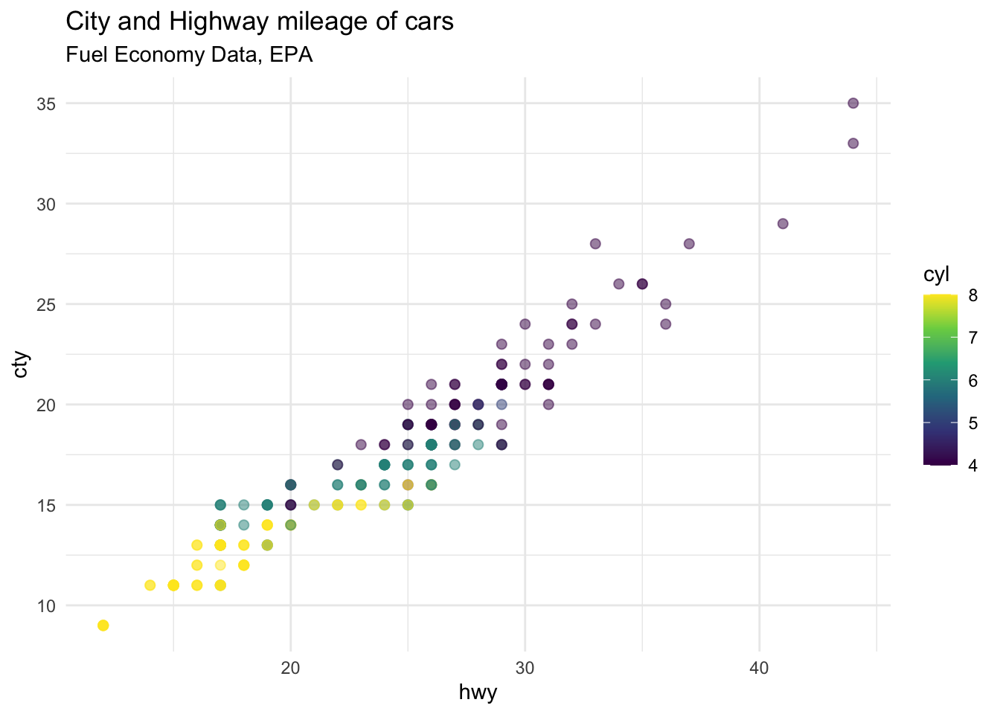

Good morning everyone, I’m exited to be here and talk a little bit about Quarto. I have to start by saying that I’m a very recent Quarto user and by any means expert. During the last months RStudio made public and has been promoting Quarto. I recently jumped into the boat and have been slowly trying to learn about it. Today I’m going to present some of my discoveries so far, but we could do a day long workshop on Quarto and still not learn it all. I’ll share the links to the slides and repository where the Quarto file that creates these slides live. Yes! This slide deck was made using Quarto. The more I learn about Quarto the more I discover how powerful this tools is for sharing your work, collaborating with other and even as a teaching tool. I know at this point you might have many questions. So lets dive more into the Quarto world.
Explain what is Quarto and how it works
Brief demonstration
Show a website, book and how this presentation was created with Quarto
Hello Quarto!
Quarto is a new, open-source, scientific and technical publishing system.
Allows you to weave together narrative text and code to produce elegantly formatted output as documents, web pages, blog posts, books and more.
The goal is to make the process of creating and collaborating much better.
Hello Quarto!
Similar to RMarkdown, but two of the main differences is that Quarto makes it easier to weave in code in other programming languages and it can be used in other tools different that RStudio. This means is make sit easier to collaborate with peers that do not used RStudio.
ggplot(mpg, aes(x = hwy, y = cty, color = cyl)) +geom_point(alpha =0.5, size =2) +scale_color_viridis_c() +theme_minimal()+labs(title ="City and Highway mileage of cars",subtitle ="Fuel Economy Data, EPA")

How it works?
Quarto is a command line interface (CLI) that renders plain text formats (.qmd, .rmd, .md) into static PDF/Word/HTML reports, books, websites, presentations and more
What’s all the jargon?
Command line?
Markdown?
What’s all the jargon?
Command line
The command line is a text interface for your computer.
Instead of clicking on a button on to tell your computer what to do, you tell the your computer what to do by typing out the command. The space where you type in the commands is called terminal. I’ll try to show this when we do the demonstration
What’s all the jargon?
Markdown
Markdown is a lightweight markup language for creating formatted text using a plain-text editor
It’s is own language that allows you to format text using a plain text editor. I hope this will all make sense with the demonstration.
Let’s take a tour…
Set up Quarto
Make sure you are using the most up-to-date version of RStudio. Check by clicking on the Help button on the top menu, Check for updates.